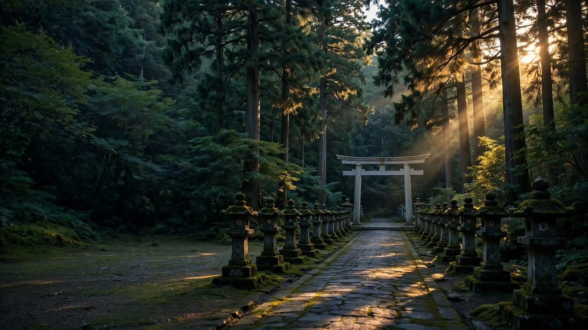
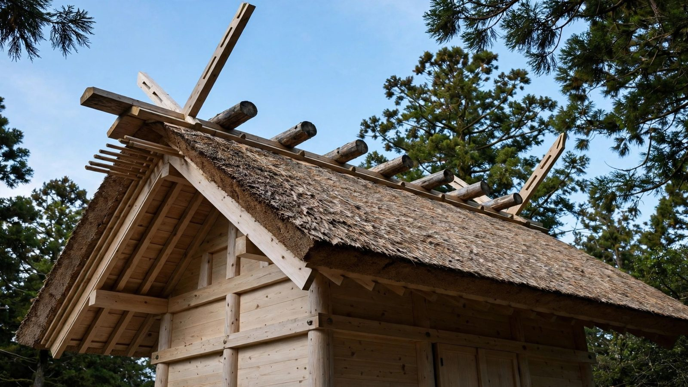
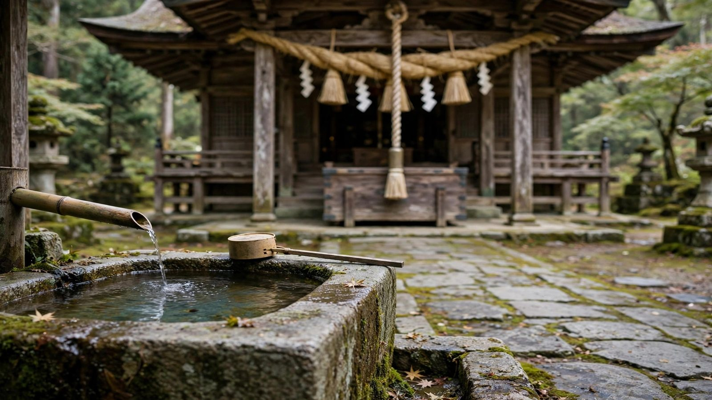

Shrine Trivia: Are the Rumors True? Checked Against Sources

There are many stories about shrines that make people wonder, "Is that really true?" Here, common rumors are checked against sources such as shrine official websites, shrine agencies, the Agency for Cultural Affairs, and universities, and sorted into "correct knowledge," "myth," and "what is not known."
CorrectPartly trueMythUnknown
Blogs, personal sites, and curation sites are not used. Only what the sources say is written, and what they do not say is described as "not known." The original text of each source can be read from "Source" under each item. Quotations are re-fetched from the source pages and machine-checked to confirm that they appear word for word (exactly as in the original).
Column: Can You Tell the Enshrined Deity from the Direction of the Main Hall?

I heard a rumor: "If you look at the direction the main hall faces, you can tell which deity is enshrined." Is it true? For the 153 shrines in the Shrine Note, we checked whether sources such as official websites, the Agency for Cultural Affairs, and local governments state the direction of the main hall.
18 shrines whose direction was confirmed in sources
| Shrine | Main deity | Faces | What faces it | Source |
|---|---|---|---|---|
| Kashima Jingū | Takemikazuchi-no-Ōkami | Facing north | Main hall (honden) | Open source |
| Ōkunitama Jinja | Ōkunitama-no-Kami | Facing north | Main hall (honden) The shrine explains that the shrine buildings, which once faced south, were changed to face north in 1051 | Open source |
| Aso Jinja | Takeiwatatsu-no-Mikoto | Facing east | Hall / grounds Three sanctuary buildings and three gates face east | Open source |
| Takachiho Jinja | Ninigi-no-Mikoto | Facing southeast | Main hall (honden) | Open source |
| Chōkaisan Ōmonoimi Jinja | Ōmonoimi-no-Kami | Facing south | Main hall (honden) | Open source |
| Dewa Sanzan Jinja | Tsukuyomi-no-Mikoto | Facing south | Shrine buildings | Open source |
| Iwashimizu Hachimangū | Empress Jingū | Facing south | Main hall (honden) | Open source |
| Izumo Taisha | Ōkuninushi-no-Ōkami | Facing south | Main hall (honden) The building faces south. The inner sanctum seat of the deity (goshinza) faces west | Open source |
| Kumano Nachi Taisha | Kumano-Fusumi-no-Ōkami | Facing south | Shrine buildings The first to fifth halls face south; the sixth hall and Miagatahiko Shrine face east | Open source |
| Miyazaki Jingū | Emperor Jinmu | Facing south | Hall / grounds | Open source |
| Ichinomiya Nukisaki Jinja | Futsunushi-no-Ōkami | Facing south | Hall / grounds | Open source |
| Ōsaki Hachimangū | Emperor Ōjin | Facing south | Shrine buildings | Open source |
| Ōtori Taisha | Yamato Takeru-no-Mikoto | Facing south | Shrine buildings | Open source |
| Yusuhara Hachimangū | Emperor Ōjin | Facing south | Hall / grounds | Open source |
| Samukawa Jinja | Samukawahiko-no-Mikoto | Facing southwest | Main hall (honden) | Open source |
| Shiogama Jinja | Shiotsuchi-no-Oji-no-Kami | Facing west | Shrine buildings The Sayū-gū (left and right shrines) faces south, and the betsugū (auxiliary shrine) faces west. The direction shown here is that of the auxiliary shrine of the principal deity | Open source |
| Sumiyoshi Taisha | The Three Sumiyoshi Deities | Facing west | Main hall (honden) | Open source |
| Itsukushima Jinja | The Three Munakata Goddesses | Facing northwest | Shrine buildings Direction of the shrine buildings as a whole (built in the sea) | Open source |
Breakdown of directions (as stated in sources): south, 10 shrines; north, 2; west, 2; and east, southeast, southwest, and northwest, 1 each. For "what is facing," the table says "main hall" where the source explicitly states the honden, "shrine buildings" for the shrine buildings as a whole, and "sanctuary and precinct" where the source describes the direction of a sanctuary or the precinct. For the remaining 135 shrines, we searched sources such as official websites, the Agency for Cultural Affairs, local governments, and shrine agencies, but either no description of direction was found or the site could not be opened (Suwa Taisha Kamisha Honmiya and Ōmiwa Shrine do not have a main hall at all). Sources may tend to describe shrines whose direction is distinctive.
No description linking direction to the enshrined deity was found. At Izumo Taisha the building and the seat of the deity face different directions, and the sources also record a case where the direction of Kasuga Taisha changed.
Sources (original wording)
従って、御神座は御本殿と同じ南向きではなく、西向きになります。
神社公式（izumooyashiro.or.jp）the shrine was built to face south, and the worship orientation changed to the north.
大学・研究機関（d-museum.kokugakuin.ac.jp）
A research project funded by a Grant-in-Aid for Scientific Research (KAKENHI), which studied village shrines, reported that the nature of the enshrined deity determines the direction. However, it was a survey of some regions, and it is not described as a rule common to all of Japan. Ōkunitama Jinja's official site also says that some shrines face a direction related to their deity or decide their direction by their own history.
Sources (original wording)
祭神の性格によって神社の面する向きが定められて来ることになり
大学・研究機関（kaken.nii.ac.jp）神社は南か東を向いています。古くから「天子南面す」と言われるように玉座は南、太陽の方角を向いていました。神様も同じように南を向くのが多いようです。この他、御祭神に関係する方角を向いていたり、太陽の出る方角等各社の由緒によって向きを決めた神社もあり
神社公式（ookunitamajinja.or.jp）
A university explanation says that facing south is usual. However, the Agency for Cultural Affairs says there was no fixed rule for layout, and among the Ise auxiliary shrines only Tsuchinomiya faces east. It is also said that the east-west axis was dominant in ancient times. Ōkunitama Jinja's official site also says that shrines face south or east.
Sources (original wording)
全国の神社の多くが南面を通例とするなかで珍しい例である。
大学・研究機関（g.kyoto-art.ac.jp）さて、他の別宮が全て南面するのに対して土宮だけが東面しています。
伊勢神宮（isejingu.or.jp）this was superseded by the south-north dominant Chinese worldview
大学・研究機関（d-museum.kokugakuin.ac.jp）神社は南か東を向いています。古くから「天子南面す」と言われるように玉座は南、太陽の方角を向いていました。神様も同じように南を向くのが多いようです。この他、御祭神に関係する方角を向いていたり、太陽の出る方角等各社の由緒によって向きを決めた神社もあり
神社公式（ookunitamajinja.or.jp）
The Agency for Cultural Affairs explains that sites were chosen along natural terrain such as mountains and rivers, and that there was no fixed rule for layout. One theory holds that Kasuga Taisha originally faced east toward a sacred mountain. No uniform rule is known.
Sources (original wording)
場所は聖域と考えられた山や川など自然地形に沿って選定され、社殿の配置も特に定まったものはなかった。
文化庁（online.bunka.go.jp）the Kasuga Shrine (Kasuga Taisha) faced east toward its sacred hill, Mount Mikasa
大学・研究機関（d-museum.kokugakuin.ac.jp）
The official website states clearly that the seat of the deity faces west, not south like the honden. A multilingual explanation by the Ministry of Land, Infrastructure, Transport and Tourism also says that the entrance is on the south side and the sacred chamber faces west.
Sources (original wording)
従って、御神座は御本殿と同じ南向きではなく、西向きになります。
神社公式（izumooyashiro.or.jp）大国主神が祀られている内側の聖室は、「上段」の右側の区画にあり、西に面しています。
その他（mlit.go.jp）
That the honden faces north could be confirmed in the Agency for Cultural Affairs database. Guarding against the Emishi is an interpretation in a university-related explanation; neither the official site of the Jingū nor the Agency for Cultural Affairs gives a reason.
Sources (original wording)
三間社流造、向拝一間、檜皮葺、北面
文化庁（online.bunka.go.jp）つまり北方鎮護の社であったことを意味している。
大学・研究機関（g.kyoto-art.ac.jp）
What the sources could not confirm
- Which way the main sanctuaries (shōden) of the Naigū (Inner Shrine) and Gegū (Outer Shrine) of Ise Jingū face (on the official website, only a description of the auxiliary shrines facing south was confirmed; no official source stating the direction of the shōden was found)
- Why only Tsuchinomiya of Ise Jingū faces east (the official website also says it does not make this clear)
- Why Kashima Jingū faces north (not described in the official sources of the Jingū or the Agency for Cultural Affairs)
- Statistics on what proportion of shrines in Japan face south, east, and so on
- An official rule setting a general standard for deciding the direction of shrine buildings (how to take the sun, the approach, the sea, and so on) (the Agency for Cultural Affairs explains that "there was nothing in particular fixed")
Can You Tell the Deity's Gender from Chigi and Katsuogi?

The crossed timbers on the roof (chigi) and the logs lined up across it (katsuogi). Have you heard that "the way the tips of the chigi are cut and the number of katsuogi show whether the deity is male or female"?
Many shrines follow the example of Ise, but it is not a rule. In the paper's survey, 76.50% of 285 buildings matched, and in architectural history the theory has been regarded as having an uncertain basis.
Sources (original wording)
Many other shrines follow this practice.
大学・研究機関（d-museum.kokugakuin.ac.jp）Analyzing 285 shrine buildings, 76.50% conformed to the theory
大学・研究機関（jstage.jst.go.jp）often considered unsubstantiated
大学・研究機関（jstage.jst.go.jp）some instances like Sumiyoshi Shrine and Kumano Nachi Taisha suggest its relevance
大学・研究機関（jstage.jst.go.jp）
The shōden of Ise Jingū has 10 katsuogi at the Naigū and 9 at the Gegū. Kokugakuin University's encyclopedia describes this as a tradition of Ise, but it is not described as a rule common to all of Japan.
Sources (original wording)
10本（偶数）
伊勢神宮（isejingu.or.jp）9本（奇数）
伊勢神宮（isejingu.or.jp）Many other shrines follow this practice.
大学・研究機関（d-museum.kokugakuin.ac.jp）
A comparison table on the Jingū's official website lists the difference in the number of katsuogi and the way the chigi are cut on the shōden of the two main shrines. The same page does not describe any relation to the gender of the deity.
Sources (original wording)
10本（偶数）
伊勢神宮（isejingu.or.jp）9本（奇数）
伊勢神宮（isejingu.or.jp）
The sources explain chigi as originally a structural reinforcement and now a symbol of sacredness, and do not state that their purpose was to indicate gender. Katsuogi were also found on the houses of nobles.
Sources (original wording)
but today, most serve as symbols emphasizing the sacred nature of the structure.
大学・研究機関（d-museum.kokugakuin.ac.jp）adorned the homes of members of the court and aristocracy
大学・研究機関（d-museum.kokugakuin.ac.jp）
Chigi are said to be a remnant of an old method of building roofs, and both have existed since ancient times. The explanation of the nationally designated cultural property also states that chigi and katsuogi are placed on the honden of Izumo Taisha.
Sources (original wording)
Both date to ancient times.
大学・研究機関（d-museum.kokugakuin.ac.jp）believed to be a vestige of primitive construction practices
大学・研究機関（d-museum.kokugakuin.ac.jp）大棟の上に千木と堅魚木をおく
文化庁（kunishitei.bunka.go.jp）
Izumo Taisha's official website only gives the chigi as 7.9 m and the katsuogi as 5.45 m, and the Agency for Cultural Affairs also does not state how they are cut or how many there are. Whether it is an exception could not be confirmed.
Sources (original wording)
千木は長さ7.9メートル、勝男木は長さ5.45ｍもあり
神社公式（izumooyashiro.or.jp）大棟の上に千木と堅魚木をおく
文化庁（kunishitei.bunka.go.jp）
What the sources could not confirm
- How the chigi of the honden of Izumo Taisha are cut and how many katsuogi it has (not described on the official pages or the pages of the Agency for Cultural Affairs)
- The relation between the gender of the deity of the Gegū of Ise Jingū and the way the chigi are cut and the number of katsuogi (not described on the architecture page of the Jingū's official website)
- When and why the theory linking the cutting of chigi and the gender of the deity spread (the paper says that research on when the cutting of chigi was changed is a task for the future)
- Any official standard set by the Shrine Association of Japan for chigi and katsuogi (not found on the pages opened this time)
Are There Rules for the Color of Torii?

Are red torii only for Inari shrines? Are unpainted wood torii of higher rank? We checked the stories about the color of torii.
Fushimi Inari Taisha itself explains that "Inari shrines are not the only ones painted vermilion." A local government also introduces the great torii of Itsukushima Shrine as vermilion.
Sources (original wording)
ただ、お稲荷さんだけが朱塗りではなく、朱塗りの神社は他にも多くあります。
神社公式（inari.jp）海上にそびえ立つ朱塗りの大鳥居とともに宮島を象徴するシンボルになっています。
自治体（city.hatsukaichi.hiroshima.jp）
Shrines offer explanations that see vermilion as a color that wards off evil. However, whether the idea of warding off evil comes from ancient Japan or from China is disputed, and there is no established view.
Sources (original wording)
朱色は、魔力に対抗する色ともされていて、古代の宮殿や神社仏閣に多く用いられています。
神社公式（inari.jp）朱を魔除けと考える所以が、日本古代からであるか中国伝来であるかは諸説あり定かではありません
神社本庁（tokyo-jinjacho.or.jp）古来この丹には魔を退ける力があるとされ、貴ばれてきました。
神社公式（niutsuhime.or.jp）
Shrines explain that tan, the raw material of vermilion, has long been used as a wood preservative and that tan painting came from China in or after the 6th century. They do not go as far as saying that it was the single decisive reason.
Sources (original wording)
また朱の原材料は水銀＝丹です。これは昔から木材の防腐剤として使われてきました。
神社公式（inari.jp）六世紀以降に中国から防腐剤の機能をもつ「丹（に）塗り」技術が伝わると
神社本庁（tokyo-jinjacho.or.jp）「丹」とは、辰砂（朱砂）の鉱石より採取される赤い顔料をあらわします。
神社公式（niutsuhime.or.jp）
No description distinguishing the rank or deity of a shrine by the color of its torii was found in the public sources we opened.
The shrine agency's classification is by form (Shinmei type and Myōjin type) and does not state any rule on color. Materials also include wood, stone, and concrete, and there are examples of stone Myōjin-type torii and concrete Shinmei-type torii.
Sources (original wording)
これらを大別すると、神明鳥居系と、神明鳥居が装飾的に発展した明神鳥居系の二つになります。
神社本庁（tokyo-jinjacho.or.jp）鉄筋コンクリート造、表面モルタル洗出仕上げの神明鳥居で
文化庁（online.bunka.go.jp）境内西寄りに置かれた石造明神鳥居。
文化庁（online.bunka.go.jp）
Meiji Jingū states in its official bulletin that the south approach torii built in 2022 is made of unpainted cedar. No source describing the distribution or rank of plain-wood torii could be confirmed.
Sources (original wording)
最終的に「素木（しらき）で国産のもの」ということで杉に決定しました。
神社公式（meijijingu.or.jp）
What the sources could not confirm
- The definition of the difference in form between Shinmei and Myōjin torii (whether the kasagi is straight or both ends curve upward): the Shrine Association of Japan's page "About Torii" (https://www.jinjahoncho.or.jp/omairi/torii/) was under maintenance and its text could not be opened
- The basis for the theory that plain-wood torii are of higher rank than vermilion ones (no public description dividing the rank of shrines by the color of torii was found)
- The color of the torii of Ise Jingū (the official site mentions the reuse of the torii of Uji Bridge, but does not say whether it is painted)
- When vermilion began to be used, and when the custom of painting torii vermilion became established
Is the Worship Etiquette Always "Two Bows, Two Claps, One Bow"?

We checked the "you must always..." claims about worship etiquette against explanations from the shrines.
Two bows, two claps, one bow is the basic etiquette. However, the Tokyo Metropolitan Shrine Agency says there are no strict rules, and Izumo Taisha treats two bows, four claps, and one bow as the formal practice.
Sources (original wording)
私たちが神社にお参りする際の作法には厳格なきまりはありません。
その他（tokyo-jinjacho.or.jp）二拝・二拍手・一拝のご作法でご参拝ください。
伊勢神宮（isejingu.or.jp）一般的には「２礼２拍手１礼」ですが、出雲大社の正式な参拝作法は「２礼４拍手１礼」となります。
神社公式（izumooyashiro.or.jp）
The Tokyo Metropolitan Shrine Agency says that bowing once before passing through is the polite way to pass through, and that when leaving the precinct it is good to turn back toward the shrine buildings and bow once.
Sources (original wording)
目上の方のお宅を訪問するような気持ちで、一礼してからくぐるのが丁寧なくぐり方とされています。
その他（tokyo-jinjacho.or.jp）まず鳥居をくぐる前に一揖（いちゆう）をします。
その他（tokyo-jinjacho.or.jp）
The center is called seichū and is said to be the path of the deity, and walking to the side is regarded as courtesy and an expression of respect. It is not described as a prohibition, and the etiquette for bowing when crossing it is also given.
Sources (original wording)
その中央は正中（せいちゅう）といわれ、神さまの通り道とされているので、そこを避けて歩くことが神さまに対する礼儀とされています。
その他（tokyo-jinjacho.or.jp）神社参拝の際、参道の中央を避けて進むのは敬意の表れの１つといえます。
その他（tokyo-jinjacho.or.jp）昔の人たちは真ん中を歩かないように心がけていました。
神社公式（meijijingu.or.jp）
The procedure at Ise Jingū draws water at the start and washes the handle with the remaining water at the end. The Tokyo Metropolitan Shrine Agency does not give the number of times to draw water, and temizu pavilions with running water or without ladles follow different steps.
Sources (original wording)
たっぷりと水をくみ、左手を清めます。
伊勢神宮（isejingu.or.jp）残った水で柄杓の
伊勢神宮（isejingu.or.jp）最後に水を入れた柄杓を立て、柄に水を流してから柄杓置きに伏せて置きます。
その他（tokyo-jinjacho.or.jp）2.両手に水をため口をすすぎます。
神社公式（meijijingu.or.jp）
Izumo Taisha's official FAQ gives two bows, four claps, and one bow as the formal etiquette, with eight claps only at the annual festival (reisai) on May 14. Worship etiquette may differ from shrine to shrine.
Sources (original wording)
ただし、８拍手は年に１度の例祭（勅祭）の時のみの作法としています。
神社公式（izumooyashiro.or.jp）ご本殿以外のご社殿をお参りの際にも、この作法にてご参拝下さい。
神社公式（izumooyashiro.or.jp）
The official site of Ise Jingū guides worshippers to make two bows, two claps, and one bow. Yahirade itself could not be confirmed on the official pages.
Sources (original wording)
二拝・二拍手・一拝のご作法でご参拝ください。
伊勢神宮（isejingu.or.jp）肩幅程度に両手を開き、2回拍手を打ちます。
伊勢神宮（isejingu.or.jp）
What the sources could not confirm
- The official website of the Shrine Association of Japan (the pages on worship methods, temizu pavilions, and the precinct) was under maintenance (HTTP 503) when fetched and the text could not be read, so the Association's own descriptions could not be confirmed.
- Whether the eight-clap form (八開手, also called 八度拝, "eight bows") exists as an etiquette for priests at Ise Jingū, and what it involves, could not be confirmed in the official pages or the designated sources.
- No public source was found that sets by number how many times the water in the ladle is divided for temizu.
- When and how two bows, two claps, one bow (nihai nihakushu ippai) spread to its present form could not be confirmed in the designated sources.
Updated: 2026-11-27